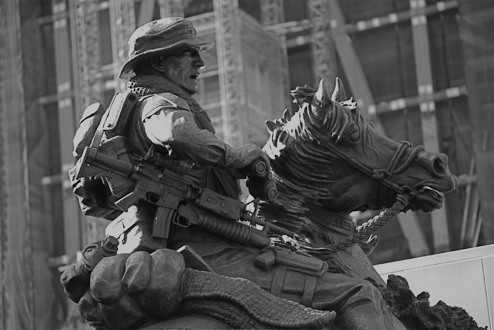

Platform-agnostic edge-native inference for autonomous systems operating in Denied, Degraded, Intermittent, and Limited environments.

ODA 595 · Mazar-i-Sharif · 2001 · Edge-native operation
In October 2001, ODA 595 rode into northern Afghanistan on horseback — armed with laser designators and calling in B-52 strikes. Ancient platform. Most modern capability available. No logistics tail. No guaranteed communications. Mission accomplished.
That is edge-native operation. Human version.
Novawerke AI is building the machine equivalent: autonomous systems that don't wait for the network, don't need permission from the cloud, and complete the mission in exactly the environments where everything else fails.
"The platform is not the hard problem.
The cognition under constraint is the hard problem."
Novawerke is actively seeking hardware and platform partners across maritime, ground, and aerial autonomous systems domains.
Start a Teaming Conversation